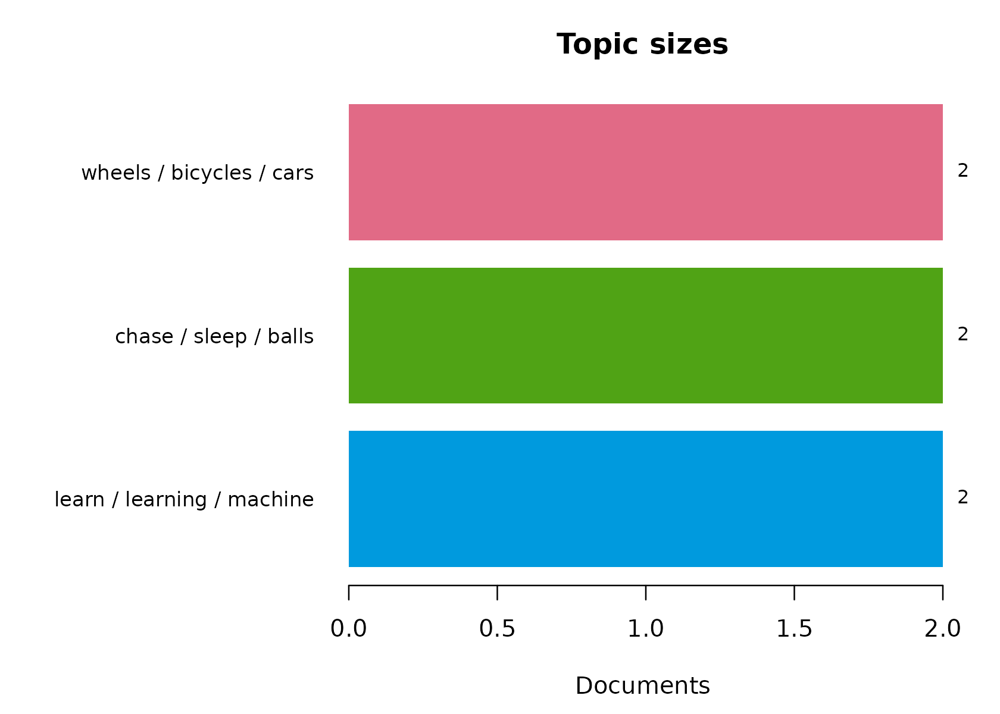
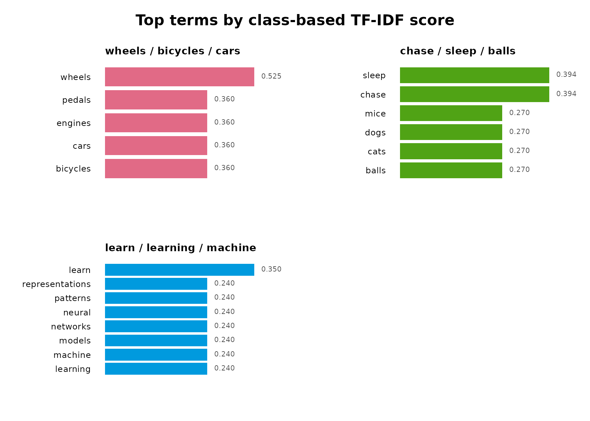
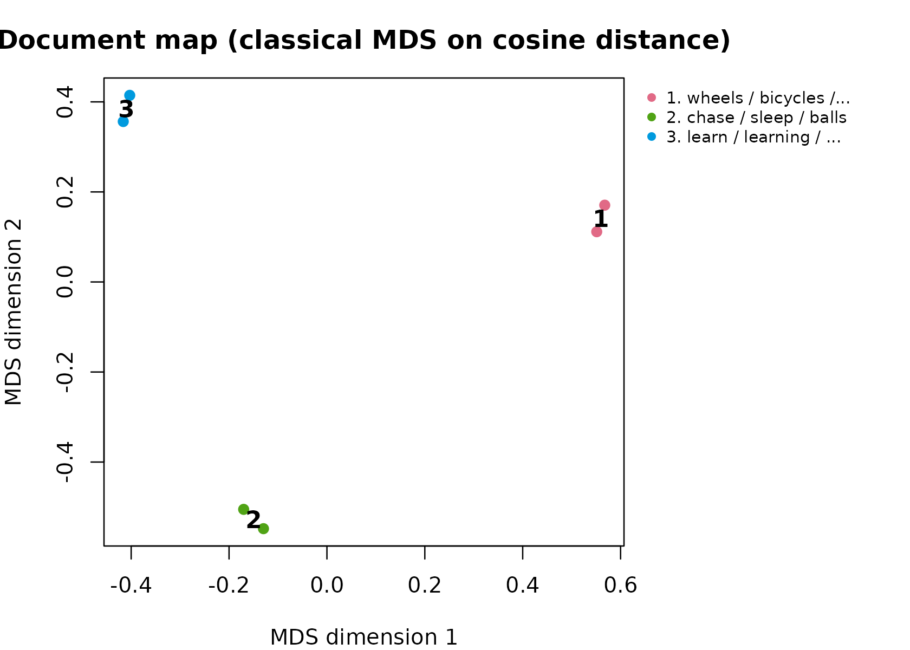

sbert runs a genuine Sentence-BERT model without Python.
It combines the official Hugging Face tokenizer configuration, native
ONNX Runtime inference, attention-mask-aware mean pooling, and L2
normalization.
Downloads are never triggered by package installation, loading, examples, tests, or this vignette. Install the native runtime and pinned model explicitly:
Load the verified files and encode text:
model <- load_model()
sentences <- c(
"A student is reading a research paper.",
"A learner studies an academic article.",
"The bicycle is parked beside the building."
)
embeddings <- encode(sentences, model)
dim(embeddings)
topic_similarity(embeddings)The output has one row per sentence and 384 columns. Normalized vectors have unit L2 norm, so their matrix product is cosine topic_similarity.
The post-processing functions are independently usable and require no model download. This small example masks the third token of each sentence:
token_embeddings <- array(seq_len(12), dim = c(2, 3, 2))
attention_mask <- matrix(c(1, 1, 0, 1, 1, 0), nrow = 2, byrow = TRUE)
sentence_embeddings <- sbert::pool(
token_embeddings,
attention_mask
)
sentence_embeddings
#> [,1] [,2]
#> [1,] 0.2425356 0.9701425
#> [2,] 0.3162278 0.9486833
rowSums(sentence_embeddings^2)
#> [1] 1 1
sbert::topic_similarity(sentence_embeddings)
#> [,1] [,2]
#> [1,] 1.0000000 0.9970545
#> [2,] 0.9970545 1.0000000Use model_status() to inspect artifact validity,
cache_size() to measure disk use, and
model_remove() to remove the pinned model.
Semantic topic modeling
topics() clusters normalized sentence embeddings with
deterministic k-means. It then identifies documents nearest each
semantic center and computes class-based TF-IDF terms from the original
text. The topic count is always explicit.
The same function accepts precomputed embeddings, so this complete example is offline-safe:
topic_text <- c(
"Cats chase mice and sleep",
"Dogs chase balls and sleep",
"Neural networks learn representations",
"Machine learning models learn patterns",
"Bicycles have wheels and pedals",
"Cars have wheels and engines"
)
topic_embeddings <- rbind(
c(1, 0, 0), c(0.95, 0.05, 0),
c(0, 1, 0), c(0.05, 0.95, 0),
c(0, 0, 1), c(0.05, 0, 0.95)
)
topic_model <- sbert::topics(
topic_text,
n_topics = 3,
embeddings = topic_embeddings,
n_terms = 4,
n_representatives = 1,
keep_embeddings = TRUE
)
topic_model$topics
#> topic label n_documents proportion withinss
#> 1 1 wheels / bicycles / cars 2 0.3333333 0.001382171
#> 2 2 chase / sleep / balls 2 0.3333333 0.001382171
#> 3 3 learn / learning / machine 2 0.3333333 0.001382171
topic_model$terms
#> topic label term rank score frequency
#> 1 1 wheels / bicycles / cars wheels 1 0.5251788 2
#> 2 1 wheels / bicycles / cars bicycles 2 0.3599140 1
#> 3 1 wheels / bicycles / cars cars 3 0.3599140 1
#> 4 1 wheels / bicycles / cars engines 4 0.3599140 1
#> 5 2 chase / sleep / balls chase 1 0.3938841 2
#> 6 2 chase / sleep / balls sleep 2 0.3938841 2
#> 7 2 chase / sleep / balls balls 3 0.2699355 1
#> 8 2 chase / sleep / balls cats 4 0.2699355 1
#> 9 3 learn / learning / machine learn 1 0.3501192 2
#> 10 3 learn / learning / machine learning 2 0.2399427 1
#> 11 3 learn / learning / machine machine 3 0.2399427 1
#> 12 3 learn / learning / machine models 4 0.2399427 1
topic_model$representatives
#> topic label rank document_id document_name
#> 1 1 wheels / bicycles / cars 1 6
#> 2 2 chase / sleep / balls 1 2
#> 3 3 learn / learning / machine 1 4
#> text distance
#> 1 Cars have wheels and engines 0.0003456024
#> 2 Dogs chase balls and sleep 0.0003456024
#> 3 Machine learning models learn patterns 0.0003456024This is document-level embedding topic discovery. It is not a probabilistic LDA model and does not estimate per-document topic mixtures.
The term weighting follows the class-based TF-IDF of Mendonca and
Figueira (2025). Set weighting = "bm25" or
reduce_frequent_words = TRUE to switch to the BM25 and
square-root variants that more aggressively suppress terms shared across
topics.
Evaluating topic quality
Topic solutions are judged, not assumed. coherence()
scores how often a topic’s top terms co-occur in the same documents;
topic_diversity() reports how distinct the topics’
vocabularies are; and summary() combines both into a single
report with a tidy per-topic quality table.
sbert::coherence(topic_model, measure = "npmi")
#> topic label measure n_terms coherence
#> 1 1 wheels / bicycles / cars npmi 4 0.1399069
#> 2 2 chase / sleep / balls npmi 4 0.4087648
#> 3 3 learn / learning / machine npmi 4 0.8065736
sbert::topic_diversity(topic_model)
#> [1] 1
summary(topic_model)
#> Semantic topic model summary
#> documents: 6
#> topics: 3
#> model: precomputed embeddings
#> between/total SS: 99.9%
#> mean npmi coherence: 0.4517
#> topic topic_diversity: 1.000 (top 10 terms)
#>
#> topic label n_documents proportion coherence
#> 1 wheels / bicycles / cars 2 0.3333 0.1399
#> 2 chase / sleep / balls 2 0.3333 0.4088
#> 3 learn / learning / machine 2 0.3333 0.8066"umass" coherence (Mimno et al. 2011) and
"npmi" coherence are both computed on the input corpus, so
no external reference corpus is required.
Visualizing a topic model
Three deterministic base-graphics views summarize a model. The document map projects the embeddings to two dimensions with classical multidimensional scaling on cosine distance – a reproducible alternative to UMAP.
plot(topic_model, type = "sizes")
plot(topic_model, type = "terms")
plot(topic_model, type = "map")